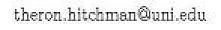

Theron J Hitchman
I am interested in differential and metric geometry, dynamical systems and Lie theory. In particular, I like to think about discrete subgroups of semisimple Lie groups and the ways in which they can act on compact manifolds by diffeomorphisms.
Right now, I am learning some geometric analysis.
I have also dabbled a little in combinatorics and number theory as an outgrowth of some student projects.
At UNI, I teach mostly geometry classes.
As an educator, I am interested in Inquiry Based Learning. For me this means using some variants of the Moore Method. I am also experimenting with Standards Based Assessment.
As a natural bridge between my teaching and scholarship, I am also interested in mentoring students through research experiences. If you are a student at UNI and interested in pursuing undergraduate research, come talk with me.
Research¶
I am interested most in the interplay of geometry, dynamical systems and Lie theory. In particular, I work on rigidity phenomena for actions of lattice subgroups of semisimple Lie groups on compact smooth manifolds. (This is part of the Zimmer Program.) Lately, I have done some work with students in combinatorics on m-ary partition functions. As a post-doctoral instructor I also worked on a mathematical biology project.
Rigidity for actions of Lattices¶
- with David Fisher, Cocycle Superrigidity and Harmonic Maps with Infinite-Dimensional Targets, International Mathematics Research Notices, vol. 2006, Article ID 72405, 19 pages, 2006.
- with Alexander Gorodnik and Ralf Spatzier, Regularity of Conjugacies of Algebraic Actions of Zariski Dense Groups, Journal of Modern Dynamics, Vol 2, no 3, 507-538.
- with David Fisher, Strengthening Kazhdan’s Property (T) by Bochner methods, Geometriae Dedicata, Vol 160, no 1, 333-364.
- with David Fisher, Harmonic Maps into Infinite Dimensional Manifolds and Cocycle Superrigidity, in progress.
M-ary Partitions¶
- with Mackenzie Roepke and James Sellers, Patterns in the Structure Polynomials for m-ary Partition Functions, in preparation.
Curriculum Development & Education¶
- Euclidean Geometry: An introduction to Mathematical Work, to appear in the Journal of Inquiry Based Learning in Mathematics.
- with Doug Shaw, Tailoring IBL Techniques to Liberal Arts Mathematics Classes without Losing Integrity or Quality, submitted 1 June 2013.
- Running a Class Journal, submitted to MAA Notes volume on teaching proof writing, 15 July 2013.
Body Pattern Formation Drosophila¶
Part of my post-doctoral appointment as a VIGRE Lovett Instructor of Mathematics at Rice University was to participate in a mathematical biology project.
- with Robin Forman, Heather Hardway, Timothy Burke, and Diane Shao, Modeling the precision and robustness of Hunchback border during Drosophila embryonic development, Journal of Theoretical Biology, Volume 254, No. 2, 390-399.
Teaching
Fall 2013 Office Hours: MWF 11am - noon & by appointment.
My Fall 2013 Classes
Mathematics in Decision Making, Math 1100
We shall learn some interesting and deep mathematics, and do it while exploring “basic things” like counting, cutting and pasting (or sewing), and data-driven decisions. Here is a link to the course web page.
Euclidean Geometry, Math 3600/5600
This course is an introduction (or a re-introduction) to axiomatic mathematical work. We shall study planar geometry, but the focus is on developing a mathematics professional's skill set. A lot more can be found on the course blog.
Inquiry Based Learning
Mathematics is best learned by doing it yourself. With this in mind, I use Inquiry Based Learning or a modified Moore method in many of my courses. Most of the focus in class is on each individual student (sometimes small groups) making sense of the mathematics on his or her own terms, and sharing that progress with the class for critique.
I have attended a few Legacy of R.L. Moore conferences, and two workshops on teaching with IBL methods. I am a member of the Academy of Inquiry Based Learning.
Standards Based Grading
In order to facilitate better communication with my students about their progress, I am experimenting in some courses with the ideas behind Standards Based Assessment and Reporting. The big idea is to focus on the key learning goals for the course and orient our work directly at them. This sounds simple (and it is), but it has some major consequences for how things are done. At this point, I am only working on this in one course (Euclidean Geometry).
Sage Mathematical Software System
An open-source (and free) alternative to Mathematica, Maple and Matlab, Sage is a fully featured computer algebra system which incorporates a large number of other open-source mathematics packages and the Python programming language into a single package which can be accessed from any fairly modern web browser. (It seems that Mozilla FireFox and Google Chrome work best.) I am beginning to use this in my own work, and I am experimenting with using it in my teaching. I have adapted a quick introduction to Sage into this web page. I also think that the official Sage tutorial is good, and I encourage students to work through the San Diego State University developed tutorial. If you are in one of my classes where we will be using Sage, you will get more detailed information in class.
There is a major new development in Sage: the lead developer is building a distributed cloud service which is really quite amazing. At this point, I think it is better suited for users with some experience with Unix/Linux-like set-ups, but Things Are Changing Rapidly.
Past Courses
I have taught a wide variety of courses. I think this is all of them, by official title:
| At University of Northern Iowa: | |
|---|---|
| (Advanced) Euclidean Geometry, Geometric Transformations, (Introduction to) Modern Geometries, Mathematical Problem Solving, Differential Geometry, Differential Calculus, Integral Calculus, Introduction to Statistical Methods, The Real Number System, Dynamical Systems: Chaos Theory and Fractals, Topics in non-Euclidean Geometry, Combinatorics, Mathematics in Decision Making, Linear Algebra | |
| At Williams College: | |
| Linear algebra, Discrete Mathematics, Geometric ODEs | |
| At Rice University: | |
| Differential Calculus, Integral Calculus, Multivariable Calculus, Ordinary Differential Equations, Introduction to Lie Groups and Lie algebras, Introduction to Partial Differential Equations | |
Student Projects
If you are interested in doing a reading or research project, please contact me. I can help you find the right person at UNI to mentor you. I have guided several projects, and have ideas for several more. To serve as a guide, here is a list of some topics I have mentored in the past. Unless otherwise specified, these projects occurred at UNI.
Undergraduate Reading Projects
- the (2,3,7)-tiling of the hyperbolic disk,
- geometric ordinary differential equations,
- Clifford-Klein space form problem (Williams College),
- Fuchsian groups (Rice U.),
- representations of Lie algebras in physics (Rice U.)
Undergraduate Research Projects
- fundamental domains for Hilbert modular groups (an Honors Thesis), Alyssa Soenksen 2007-2008
- m-ary partitions (two projects),
- symmetry of structure polynomials for m-ary partition functions, Mackenzie Roepke, 2008-2010
- divisibility of m-nomial coefficients, Duncan Wright, Summer 2011-Spring 2012
- ambigrams (an Honors Thesis, second adviser), Callie Kronlage, 2008-2009
- large metric spaces with non-positive curvature (three separate projects on this topic)
- The isometry group of a Continuum Product, Corey Gevaert, Summer 2009
- Algebraic characterization of the isometries of a continuum product, Kyle Pitzen & Joe Winder, 2009-2010
- Metric non-decreasing coordinates on a countable product of hyperbolic planes, Kyle Pitzen, 2010-2011
- Menger Curvature Transformation for Polygons, Jesse Moeller, 2012-2013
- CURM funded project on Polygon Shortening Flows, Jesse Moeller, Jon Krein, Abby Parker & Ben Castle, 2013-2014
Master’s Reading Projects
- Harmonic Functions on Cayley graphs and Gromov’s theorem on polynomial growth Mary Gilles, 2010-2011
- Plotting Limit Sets of Linear Fractional Transformations Using Sage Corey Gevaert, Spring 2012
- second reader for several Master’s in Mathematics Education (Secondary) papers
Master’s Thesis Projects
- Einstein Metrics on Piecewise-Linear 3-spheres Kyle Pitzen, 2012-2013
Service Work¶
Math Dept Service¶
Competitions Coach (Fall 2007-present)
Coach for Putnam Exam and Iowa Collegiate Mathematics CompetitionUndergraduate Research Committee (Fall 2008-present)
Chair, Fall 2010 - presentRecruitment and Retention Committee (Fall 2007-present)
Mathematics Search Committee, 2 positions (Fall 2010-Spring 2011)
Calculus Textbook Review Committee (Spring 2008)
- Mathematics Committee (Fall 2007-present)
Lately, I have been very active for this committee as we work on rethinking our curriculum.
College Service
CNS Senate Alternate (Fall 2009-Spring 2011)
CHAS Senate Alternate (Fall 2013-present)
University Service
University Writing Committee (Fall 2011-present)
LAC Category 1C Review Committee (Spring 2013-present)
Professional Service
- Member of the Academy of Inquiry Based Learning, service as a mentor for those new to IBL.
- Iowa Section of the Mathematical Association of America
- Iowa NExT steering committee (Spring 2008-present)
- Vice-Chair Elect (Spring 2008-Fall 2009), Vice-Chair (Fall 2009-Fall 2010), Chair (Fall 2010-Fall 2011), and Past-Chair (Fall 2011 - Fall 2012) of the Iowa Section
- Ad-hoc committee on Spring 2013 joint section meeting for Iowa, Missouri, Kansas, and Nebraska and SE South Dakota sections
- Mathematical Association of America Committee on Undergraduate Student Activities and Chapters (Jan 1, 2012- present) [co-organizer of the student paper presentations at MathFest]
- Student Paper Session Judge at MathFest - Portland, Oregon, 2009, - Lexington, Kentucky, 2011
Grants and Projects
- AIBL/EAF small grant ($2500) to support inquiry based instruction, Fall 2010-December 2011.
- Provost’s Pre-Tenure Summer Fellowship ($4500) to support work on harmonic maps and the rigidity of discrete groups, Summer 2011
- Participating in NSF CCLI grant UTMOST: Undergraduate Teaching of Mathematics with Open-source Software and Textbooks as a test site. This project is run through the American Institute of Mathematics, but has its own web presence. AY2011-2012 & 2012-2013.
- CURM grant (approx $20000) to support undergraduate research group in geometry for AY2013-2014.
Links
Professional Links
The Mathematical Association of America
GeoGebra, free mathematics software for learning and teaching
Past Employment & Education
How to Contact Me
| Regular Post: |
Theron J Hitchman
Department of Mathematics
University of Northern Iowa
Cedar Falls, IA 50614-0506
|
|---|---|
| Email: |  |
| Phone: | 319-273-2646 |
If you are on campus, my office is 327 Wright Hall.
Online Haunts
I use parts of the internet as communication and professional development tools. Here is where you can find me:
- My "reflective practice" teaching blog Circles and Tangents
- A math-focused blog for expository writing called Upper Half-Wit
- On the social media site Google+

- Occasionally, I even pop up on twitter as @ProfNoodlearms.